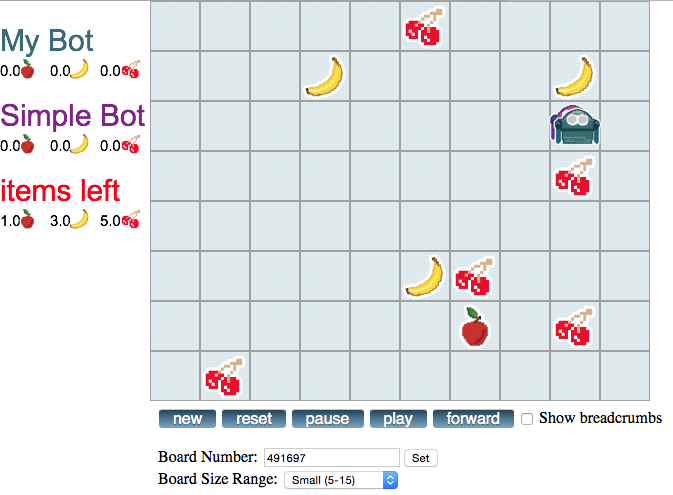

FruitBots
Table of Contents
1 An introduction to FruitBots
FruitBots is a simple JavaScript game. You program a small bot to move around a grid and pick up fruit, before your opponent can do the same.
Learn It
The game board for FruitBots looks like this 
Save It
- To start creating your own FruitBot, you're going to need the testing framework.
- Create a new directory in your home folder and call it FruitBots.
- Right click on this LINK and download the directory, saving it in your FruitBots directory.
Code It
- Open up the testing directory.
- You should find a file called mybot.js
- Open mybot.js in a text editor and you should see the following code:
function new_game(){
}
function make_move(){
}
Run It
- Let's run the program and see what happens.
- In the testing directory, you should see a webpage called game.html
- Open up game.html in a browser and a random board will be displayed, with two bots.
- The opponent bot has been disabled for the moment.
2 Moving your FruitBot
- In this section you'll learn how to move your FruitBot
Code It
- A function is a named block of code that performs some task
- In our code we have a function called
make_move() - This function is called every time it is your turn to move. So each time your FruitBot needs to make a move, the code inside
make_move()is run. - Functions can output data. We call this a
return. If you were to tell your function to return 1 it would output the number 1. If you told your function toreturn fishit would output the string fish. - The FruitBot game only understands 6 bits of data that
make_move()returns. The funtion can return any of the following constants- EAST (move east)
- NORTH (move north)
- WEST (move west)
- SOUTH (move south)
- TAKE (pick up a fruit if there is one on the square)
- PASS (do nothing)
- Let's try something simple first of all. Let's get our FruitBot to move East.
- Edit the code in mybot.js so that it looks like this.
function new_game(){
}
function make_move(){
return EAST
}
Run It
- Run game.html in a browser again, and make sure your bot is working.
- Your bot should move east, and stop when it reaches the edge of the board.
Try It
- Alter your code so that your FruitBot moves South only.
- Try making your FruitBot move in the other two directions.
3 PingPong
- In this section we'll move the FruitBot left and right.
Code It
- Before we start the next section, let's choose a default board to use for testing
- Change your mybot.js code so it looks like this:
function new_game() {
}
function default_board_number() {
return 123;
}
function make_move(){
return EAST
}
- This will make sure we are using the board 123
Learn It
- We can find the width and the height of the board using the constants
HEIGHTandWIDTH - We can find the position of your bot on the board by using
get_my_x()andget_my_y() - In FruitBots the top left square has the coordinates 0,0
Code It
- Let's use
console.log()to find out our FruitBot's position and the size of the board.console.log()will output data in the browser for you. - Change your code so that it looks like this:
function new_game() {
}
function make_move(){
console.log("The board's dimensions are " + WIDTH + " X " + HEIGHT);
console.log("My FruitBot is at " + get_my_x() + "," + get_my_y());
return EAST
}
Run It
- Run game.html
- Open a console so you can see your console logs. If this is your first time using a console, you can find out how to open it here
- Check that the console is correctly reporting the board size and the bot position.
Learn It
- In programming we often use the term flag.
- A flag is a usually a variable that describes the state of some property of the program.
- For instance we might have a
Logged_Inflag and then set it toTrueif the user has logged in andFalseif the user has not logged in.
Code It
- Let's add a flag into our script called
moving_eastand set it totrue - We'll add it outside of our functions, so that it is initially set only once, when the game begins.
var moving_east = true;
function new_game() {
}
function make_move(){
console.log("The board's dimensions are " + WIDTH + " X " + HEIGHT);
console.log("My FruitBot is at " + get_my_x() + "," + get_my_y());
return EAST
}
- Out flag doesn't actually do anything yet, let's change that using a conditional statement.
- You should have used conditionals before, but just to recap:
- A conditional is like a branch in a program.
- If a condition is met then one bit of code is run, and if it is not met then another bit of code is run.
- In JavaScript a conditional looks like this.
if (condition){
do this
}
else if (condition){
do this
}
else{
do this
}
- Let's use a conditional statement to make our bot choose a direction of travel.
var moving_east = true;
function new_game() {
}
function make_move(){
console.log("The board's dimensions are " + WIDTH + " X " + HEIGHT);
console.log("My FruitBot is at " + get_my_x() + "," + get_my_y());
if(moving_east === true){
return EAST
}
else{
return WEST
}
}
Run It
- Run your code and your FruitBot should move East, as it did before.
Try It
- Now set the flag to
false, and see what happens
Code It
- We can now control if our bot moves East or West depending on the
moving_eastflag. - Let's alter the flag depending on the position of the bot on the board.
- If the bot's
xposition is equal to0, then the bot is at the far left of the board and should move east. - If the bot's
xposition is equal to theWIDTHof the board, then the bot is at the far right of the board and should move west. - We'll add some comments to this code, so we can remember what it does.
var moving_east = false;
function new_game() {
}
function make_move(){
//log the board size and position
console.log("The board's dimensions are " + WIDTH + " X " + HEIGHT);
console.log("My FruitBot is at " + get_my_x() + "," + get_my_y());
// detect if at the edge of the board
if(get_my_x() === 0){
moving_east = true;
}
if(get_my_x() === WIDTH - 1){
moving_east = false;
}
// move the bot
if(moving_east === true){
return EAST
}
else{
return WEST
}
}
- Can you explain why we need to us
WIDTH - 1instead of justWIDTH
Run It
- Run your code and your FruitBot should move East, as it did before.
- Run game.html and make sure that it works.
Badge It
- To earn your first FruitBots badge you'll need to make you're fruit bot bounce.
- Create a new flag called
moving_north - Now alter your code so that the FruitBot bounces up and down, instead of going left and right.
- Show your teacher when you are done.